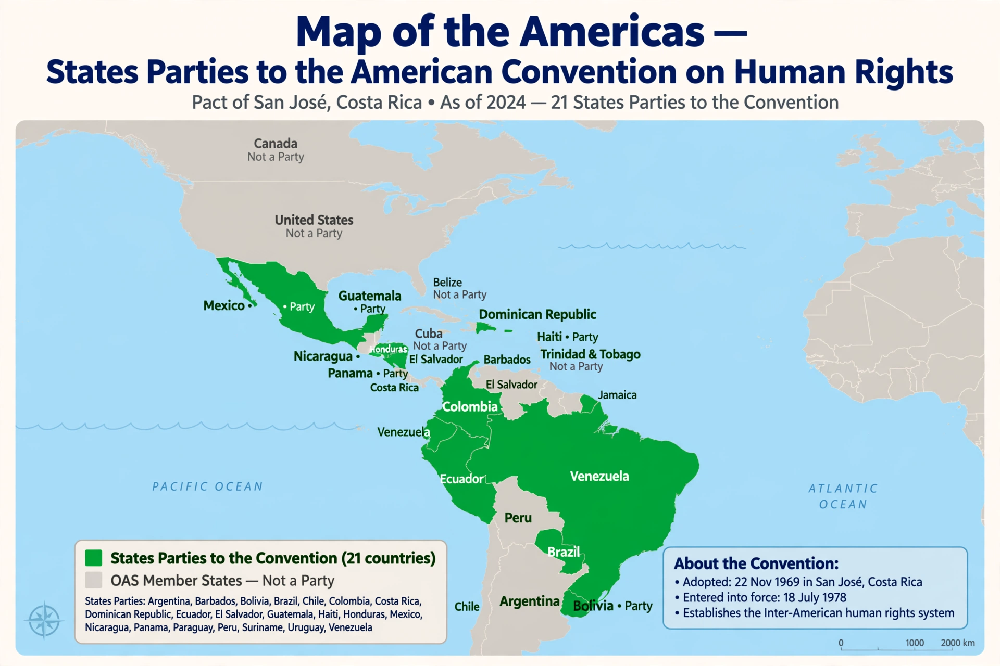

American Convention on Human Rights
From Wikipedia, the free encyclopedia
| American Convention on Human Rights | |
|---|---|
 | |
| Signed | 22 November 1969 |
| Location | San José, Costa Rica |
| Effective | 18 July 1978 |
| Parties | 24 (of 35 OAS member states) |
| Depositary | General Secretariat of the Organization of American States |
| Languages | Spanish, English, Portuguese, French |
The American Convention on Human Rights, also known as the Pact of San José, is an international human rights instrument adopted by the member states of the Organization of American States (OAS). It was adopted at San José, Costa Rica, on 22 November 1969 and entered into force on 18 July 1978.
The Convention sets out a catalogue of civil and political rights and establishes two bodies charged with overseeing compliance: the Inter-American Commission on Human Rights and the Inter-American Court of Human Rights, whose seat is in San José, Costa Rica.
Contents and structure
The Convention consists of 82 articles divided into three parts. Part I (Articles 1–32) sets out the obligations of states parties and the rights protected, including the right to life, humane treatment, personal liberty, a fair trial, freedom of conscience and religion, freedom of thought and expression, freedom of assembly and association, and the right to judicial protection. Part II (Articles 33–73) establishes the means of protection, namely the Inter-American Commission and the Inter-American Court. Part III (Articles 74–82) contains general and transitional provisions on signature, ratification, reservations and denunciation.
Article 2 requires states parties to adopt such legislative or other measures as may be necessary to give effect to the rights recognized in the Convention. Article 27 permits a state, in time of war or other public emergency threatening its independence or security, to derogate from certain obligations, but several rights — including the right to life and the prohibition of torture and slavery — are non-derogable.
Additional protocols
Two protocols supplement the Convention. The Additional Protocol in the Area of Economic, Social and Cultural Rights (Protocol of San Salvador), adopted in 1988, addresses rights such as work, health, food, education and social security. The Protocol to Abolish the Death Penalty, adopted in 1990, commits ratifying states not to apply capital punishment.
Compliance and supervision
The Inter-American Commission receives individual petitions alleging violations by states parties. If a case cannot be resolved, the Commission may refer it to the Inter-American Court, provided the state has accepted the Court's contentious jurisdiction. The Court's judgments are binding, and it may also issue advisory opinions interpreting the Convention.
Ratification and denunciations
Most OAS member states have ratified the Convention. Notable non-parties include the United States, which signed the Convention in 1977 but has never ratified it, and Canada. Trinidad and Tobago denounced the Convention in 1998 (effective 1999), largely over death penalty litigation, and Venezuela denounced it in 2012 (effective 2013), though the Commission has continued to assert competence over events occurring before the denunciation took effect.
See also
- Inter-American Commission on Human Rights
- European Convention on Human Rights
- Universal Declaration of Human Rights
This article is a recreation from memory in the style of Wikipedia.